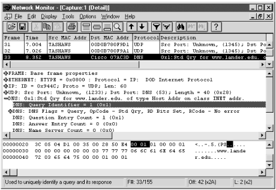

5.8. Microsoft Windows
In general, it is inadvisable to leave
packet capture programs installed on Windows systems unless you are
quite comfortable with the physical security you provide for those
machines. Certainly, packet capture programs should never be
installed on publicly accessible computers using consumer versions of
Windows.
The programs
WinDump95 and
WinDump are
ports of
tcpdump to Windows 95/98 and Windows
NT, respectively. Each requires the installation of the appropriate
drivers. They are run in DOS windows and have the same basic syntax
as
tcpdump. As
tcpdump has
already been described, there is little to add here.
ethereal is
also available for Windows and, on the whole, works quite well. The
one area in which the port doesn't seem to work is in sending
output directly to a printer. However, printing to files works nicely
so you can save any output you want and then print it.
One of the more notable capture programs
available for Windows platforms is
netmon
(Network Monitor), a basic version of which is included with Windows
NT Server. The
netmon program was originally
included with Windows NT 3.5 as a means of collecting data to send to
Microsoft's technical support. As such, it was not widely
advertised.
Figure 5-5 shows the packet display
window.

Figure 5-5. netmon for Windows
The basic version supplied with
Windows NT Server is quite limited in scope. It restricts capture to
traffic to or from the server and severely limits the services it
provides. The full version is included as part of the Systems
Management Server (SMS), part of the BackOffice suite, and is an
extremely powerful program. Of concern with any capture and analysis
program is what protocols can be effectively decoded. As might be
expected,
netmon is extremely capable when
dealing with Microsoft protocols but offers only basic decoding of
Novell protocols. (For Novell protocols, consider Novell's
LANalyzer.)
One particularly nice feature of
netmon is the
ability to set up collection agents on any Windows NT workstation and
have them collect data remotely. The collected data resides with the
agent until needed, thus minimizing traffic over the network.
The program is, by default, not installed. The program can be added
as a service under network configuration in the setup window. It is
included under Administrative Tools (Common). The program, once
started, is very intuitive and has a strong help system.
 |  |  |
| 5.7. Dark Side of Packet Capture |  | 6. Device Discovery and Mapping |